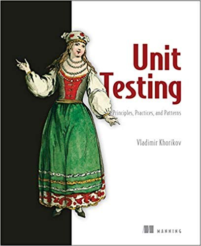

《单元测试的艺术》

总体观点
《单元测试的艺术：原则、模式与实践》（Unit Testing Principles, Practices, and Patterns）是软件工程测试领域近十年来最具颠覆性与洞察力的里程碑之作。作者Vladimir Khorikov在书中毫不留情地戳破了软件行业长期弥漫的一个巨大神话：高代码覆盖率（Coverage）并不等于高代码质量；拙劣、与实现细节过度绑定的单元测试套件，不仅无法保护代码，反而会化作阻碍系统演进的沉重泥潭，让开发者在日常重构时陷入无休止修测试假阳性（False Positives）的痛苦深渊。
全书以极其清晰、数学般严密的逻辑，树立了衡量任何自动化测试价值的黄金标准——“优秀测试的四大支柱”：保护免受回归缺陷伤害（Protection against regressions）、抵御重构（Resistance to refactoring）、快速反馈（Fast feedback）以及易于维护（Maintainability）。作者尖锐地论证了为何绝大多数团队编写的测试缺乏“抵御重构”的能力：因为他们过度使用了Mock（模拟对象）去验证内部方法调用次数等中间实现细节，导致代码行为没有变但内部逻辑一微调、成百上千个测试便全线飘红报错崩溃。
作者系统对比了古典学派（底特律学派）与伦敦学派（模拟学派）在隔离性定义上的根本分野，力挺古典学派“基于可观测最终结果而非通信交互进行验证”的整洁理念。书中进一步详尽阐明了领域模型与贫血模型、可测试性与代码封装的权衡、基于真实数据库的集成测试策略、以及如何安全剔除易变依赖。这是一本能彻底重塑工程师工程审美、让测试套件真正成为系统保驾护航资产的技术杰作。
核心观点
-
1. 测试的终极目标：实现软件项目的可持续增长而不是追求覆盖率数字
写测试不是为了给管理层汇报90%的测试覆盖率KPI。测试代码也是负债，必须为其维护付出成本。唯有高信噪比、能抵御代码重构的测试才具备正收益。
盲目为简单的Getter/Setter写测试堆高了覆盖率，但在真实生产事故面前毫无防范作用，反而每次字段重命名都要额外修改几十处无用测试。 -
2. 四大支柱的核心权衡：抵御重构（抗误报）是测试的生命线
测试误报（代码功能正常但测试报错）是摧毁团队对测试套件信任的头号元凶。一旦误报频发，开发者便会麻木地直接点击忽略，测试套件彻底失去警戒意义。
测试如果断言“userService内部调用了三次logger.info”，重构时换了个日志组件测试全挂，这就是典型的与实现细节耦合的脆弱反模式。 -
3. 验证可观测行为而非实现细节：黑盒验证最终状态变迁
单元测试应当像终端用户或外部客户端一样看待被测类。只关心输入什么参数、输出什么结果或公开状态发生了何种变迁，对其内部中间函数调用彻底装聋作哑。
测试订单结算时，只断言“调用checkout()后用户余额扣除100元且库存减1”，绝不去验证内部是否经过了某个私有函数CalculateDiscount()的调用。 -
4. 区分进程内依赖与进程外依赖：Mock滥用的精准解毒剂
只对无法控制且对外部产生实质副作用的共享依赖（如外部支付网关、邮件服务）进行Mock打桩；对于本系统完全掌控的数据库和消息队列，应在集成测试中使用真实实例。
在Docker容器中启动真实的PostgreSQL数据库运行集成测试，能精准捕获外键约束失败与SQL语法错误，而内存Fake数据库往往会掩盖这些灾难。 -
5. 六边形架构与代码可测试性：将领域逻辑从副作用中彻底提纯
提高测试效率的最强手段是提升系统本身的架构可测试性。将无副作用的纯领域核心模型与富含IO副作用的外部控制器清晰拆分，使业务逻辑可做纯函数式测试。
让核心领域实体User成为一个纯内存对象，接收输入并返回Domain Event，持久化与发邮件全部由外层的应用服务处理，User的测试无需任何Mock。
全书思维导图 · 知识脉络树
全书结构
-
第一部分 大局观：单元测试的宏观目标与四大支柱
阐明测试在软件工程生命周期中的净投资回报率（ROI），详尽拆解防回归、抗重构、快速反馈与可维护性四大支柱的数学评估模型。
演示为什么盲目追求100%覆盖率会导致收益边际递减，指导团队如何将测试覆盖率焦点锁定在核心业务领域逻辑之上。 -
第二部分 深入核心：古典学派 vs 伦敦学派与Mock的真相
对比两大流派对“单元”与“隔离”的本质认知分歧，解剖桩代码（Stub）与模拟对象（Mock）的精确界限，揭示通信验证（Mocking）对重构抵抗力的摧毁。
给出真实对比代码：展示伦敦学派全Mock风格与古典学派真实状态断言风格在面对一次代码内部重构时的完全相反表现。 -
第三部分 集成测试的艺术与进程外依赖管理
界定集成测试在测试金字塔中的真实定位，系统讲解如何利用Testcontainers在隔离环境中测试真实数据库、事务边界与消息发布。
演示如何编写健壮的数据库集成测试：在每个测试用例前通过数据库迁移脚本重建Schema，并在用例执行完毕后安全清理数据。 -
第四部分 单元测试反模式排查与终身代码卫生
汇总最臭名昭著的单元测试反模式：测试私有方法、暴露内部私有状态、测试代码污染生产代码、时间耦合等，并提供规范重构方案。
剖析利用反射强行测试private方法的危害，演示如何通过识别隐藏的独立职责将其提取为公共协作类，从而兼顾封装与可测性。